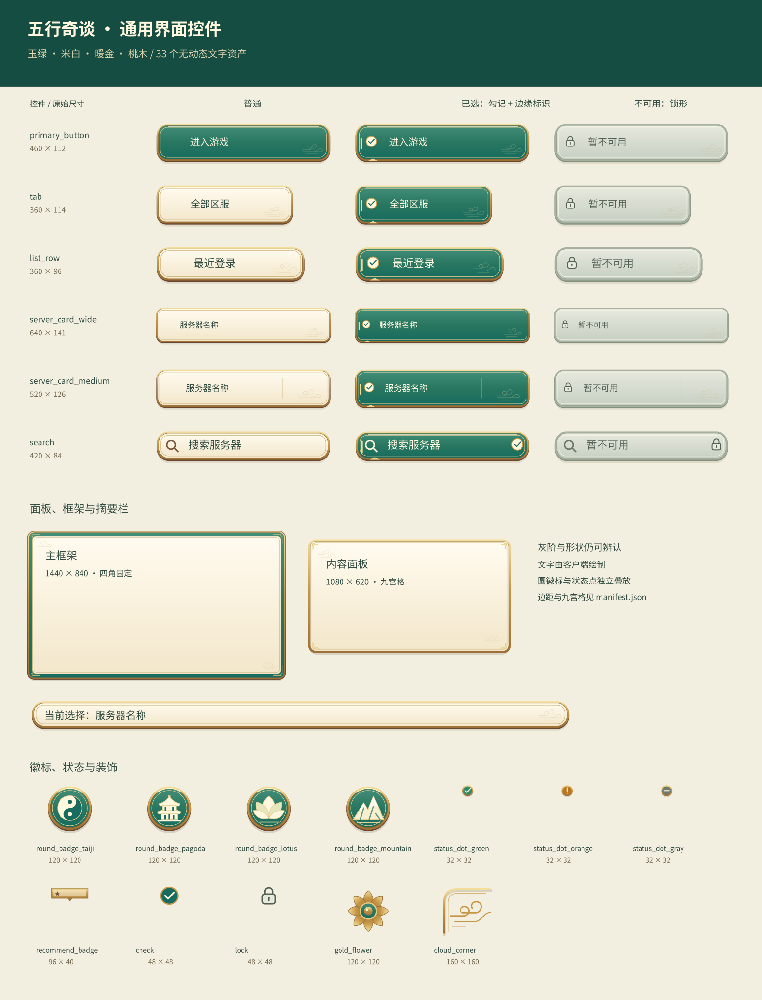

<!doctype html><html lang="zh-CN"><meta charset="utf-8"><meta name="viewport" content="width=device-width, initial-scale=1"><title>五行奇谈 · 通用 UI 控件</title><style>body{margin:0;background:#e6e5d9;color:#344d43;font:16px/1.6 "Microsoft YaHei",sans-serif}header{padding:24px 5vw;background:#164d43;color:#fff7de;display:flex;gap:24px;align-items:center;flex-wrap:wrap}h1{font-size:24px;margin:0}a{color:#f0d492}main{max-width:1800px;margin:auto}img{display:block;width:100%;height:auto}p{margin:0}</style><header><h1>五行奇谈 · 33 个通用 UI 控件</h1><p>总览文字仅用于检查，SVG / PNG 控件未烘焙动态文字。</p><a href="manifest.json">尺寸与九宫格</a><a href="README.md">接入说明</a></header><main></main></html>